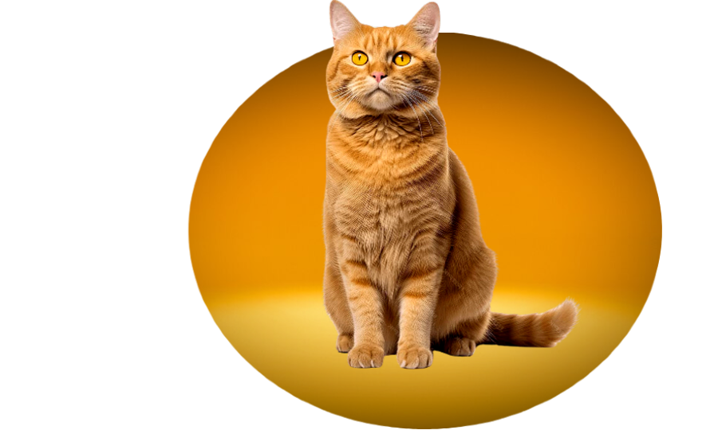

¿Sabias Que?
La crisis española no afecta solo a las personas. Un estudio realizado por la Fundación Affinity muestra la repercusión de este desajuste económico en el número de abandonos felinos. Con el comienzo de este desequilibrio en 2008, el número de gatos domésticos encontrados en la calle ascendió de 24.000 a 38.000. Esta cifra se vio reducida en un 10% los tres años posteriores. Sin embargo, el dato sigue manteniéndose alto actualmente en comparación con comienzos de siglo, donde la media era de 13.000 abandonos por año.

19 de febrero
L
M
M
J
V
S
D
29
30
31
1
2
3
4
5
6
7
8
9
10
11
12
13
14
15
16
17
18
19
20
21
22
23
24
25
26
27
28
29
1
2
3

Calendario (づ ◕‿◕ )づ
puede que tengas algunas preguntas de algunas cosas en concreto sobre la pagina, pulsa en el siguiente boton para encontrar mas informacion relacionada a curiosidades de estos felinos
Mas informacionSobre nosotros
!Hola apasionado de los felinos! bienbenido a mi pagina web se que no es muy
profesional :c pero estamos trabajando en ello.
somos un grupo de 3 estudiantes dando lo mejor de nosotros en esta pagina web con
el conocimiento que tenemos hasta ahora sobre desarrollo de paginas web, espero te guste y que sea de tu agrado.
Felinos
¿Sab√≠as que los gatos son como los maestros del yoga del reino animal? Pueden dormir hasta 16 horas al d√≠a. S√≠, ¬°16 horas! Estos felinos son expertos en encontrar las posturas más relajadas y c√≥modas para tomar una siesta. Parece que mientras nosotros estamos lidiando con el estr√©s diario, los gatos están perfeccionando su arte del descanso. Son los gurús del zen que todos necesitamos seguir. üò∫üí§